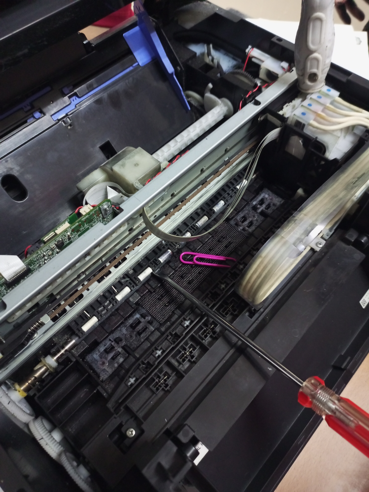
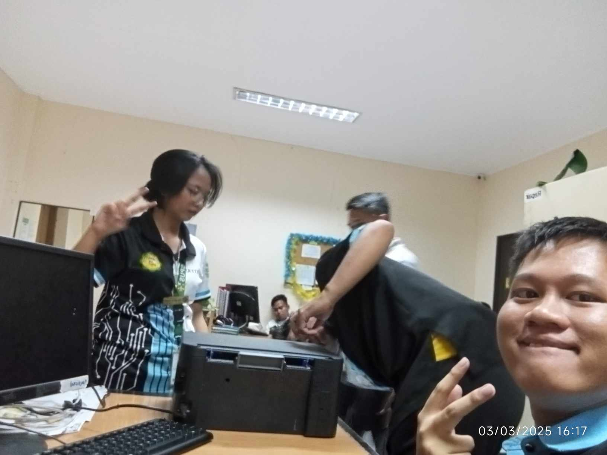
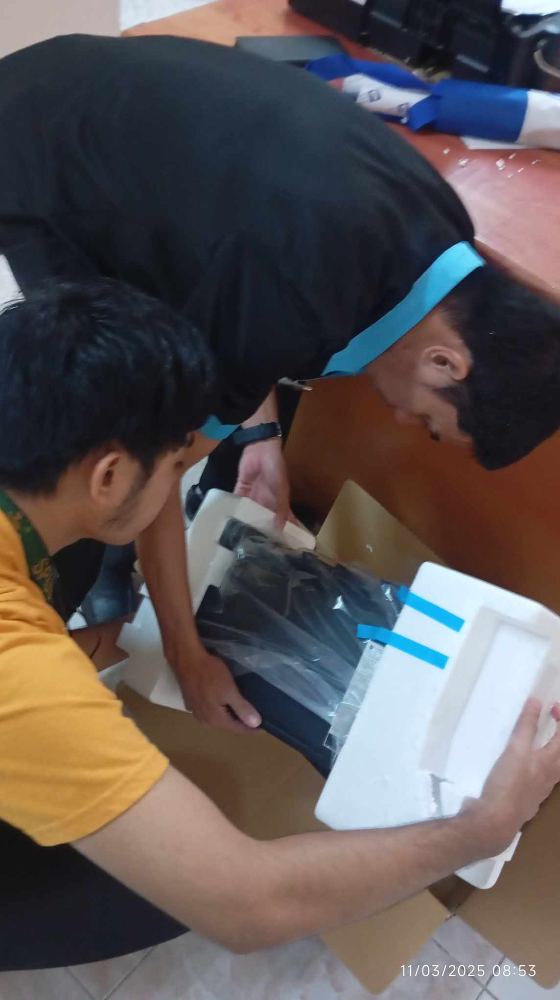
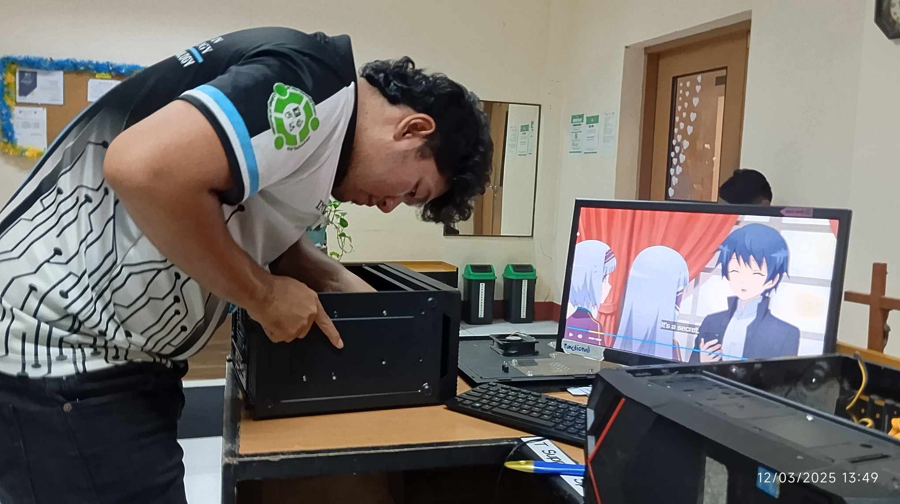

THANK YOU! To be honest, I never imagined I’d make it this far. There were so many points along the way where I thought, “This is it, I’m not going to make it to the defense.” But somehow, through a lot of late nights, doubts, and prayer, I’ve made it. And for that, I’m incredibly thankful. First, to my amazing thesis/Capstone groupmates: Cyrus Duane Chua, Kiven Clefford Esmeralda, and Ma. Nikka Joy Placeros. Thank you for being with me every step of the way. We’ve been through the highs, the lows, and everything in between. I’m so grateful we were in this together. To our thesis adviser, Mr. Warner Guyano. Thank you for your patience, encouragement, and guidance. You helped shape this work into what it is, and we couldn’t have done it without you.
A huge thank you to our panel evaluators: Engr. John Pearl Manungas, Dr. Nikko Ederio, and Sr. Maria Rosanne Mallillin. Thank you for taking the time to evaluate our work and help us grow through your feedback. And finally, to my ever-supportive parents. Thank you for believing in me even when I was on the verge of giving up. Your love and encouragement gave me strength to keep going. This journey has been anything but easy. But looking back, I’m just incredibly thankful. Whether this ends in success or another lesson learned, I’m proud to have made it here.
This is it! “They said take a picture to remember the journey. All I remember is coffee, deadlines, and somehow surviving it all. But hey—we did it. Here’s to the chaos and the growth.”
As I sat down for my yearbook photo, I couldn’t help but feel a wave of mixed emotions. This is the photo that’s supposed to represent the end of a chapter—the celebration of graduation, of everything finally coming together. But truthfully, it still doesn’t feel like the end. My thesis defense is still ahead, and there’s this lingering uncertainty about whether I’ll really make it across the finish line.
It’s a strange feeling, smiling for a picture that’s meant to mark something you haven’t fully achieved yet. There’s pride, of course—pride in how far I’ve come, in the long nights, the quiet struggles, the moments when giving up felt easier than pushing forward. But there’s also fear. The kind that whispers, “What if it’s not enough?”
Still, I showed up. I sat there, smiled, and let that camera capture more than just a face. It captured resilience. It captured the version of me that, despite all the doubts, chose to believe—even just a little—that maybe, just maybe, I will make it.
So no, I’m not done yet. But I’m here. I’ve come this far. And that alone is something worth remembering.
OWO! THANK YOU SO MUCH ...
As my OJT journey comes to an end after 2 months and 20 days, I just want to take a moment to express my sincerest gratitude to the amazing ICT staff who became more than just mentors—they became part of my learning story.
To Engr. John Pearl Manungas, Engr. Arnold, Ma’am Janet, Sir Jovilson, Sir Taghoy, Sir Dexter, Sir Rayman, and Sir Brendan—thank you for welcoming me into your team and treating me not just as a trainee, but as someone with potential. Your guidance, patience, and support have taught me lessons that go far beyond technical skills.
Every task, conversation, and shared laughter made this experience meaningful. I’ve learned not just how systems work, but how a good team functions—with professionalism, collaboration, and a little bit of fun in between.
This OJT chapter has been a huge part of my growth, and I will always be grateful for the time, effort, and trust you all extended to me. I may be closing this chapter soon, but the lessons and memories will stay with me as I move forward.
Thank you for everything, and I hope our paths cross again someday
I’m Kenn Ashly Dangate, a work-in-progress and a quiet fighter. I may not be the loudest in the room, but I carry my dreams with quiet determination and a heart that refuses to give up—no matter how tough the road gets.
This journey has been full of self-doubt, unexpected turns, and moments where I questioned if I was really cut out for this. But every step—no matter how slow or uncertain—was still a step forward. I’m not perfect, and I’m still figuring things out, but I’m learning to trust the process and believe in who I’m becoming.
I’m someone who values growth, gratitude, and the people who walk with me on this path. I’ve learned that success isn’t about getting everything right—sometimes it’s just about showing up, learning, and trying again tomorrow.
This is me—still learning, still dreaming, and still standing.
BSD Eminemce Shadow Sailor Moon Dragon Ball Attack on Titan Demon Slayer Naruto: Shippuden Death Note Pokemon




GMAIL: kennashly@gmail.com
GLOBE: +639952142969
SMART: +639385920156